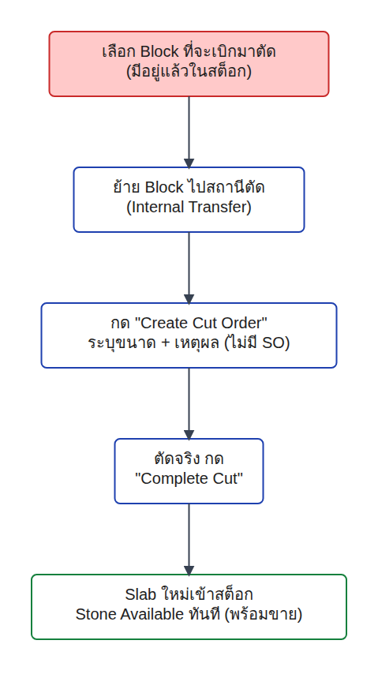
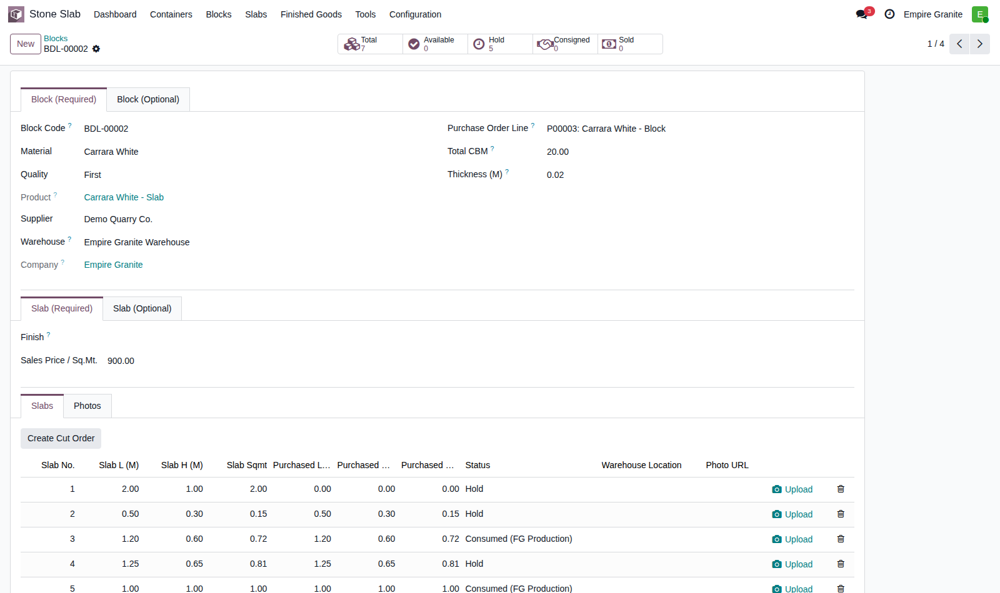
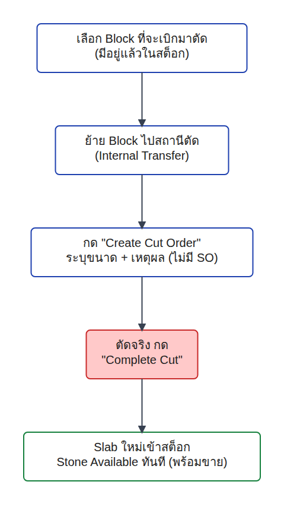
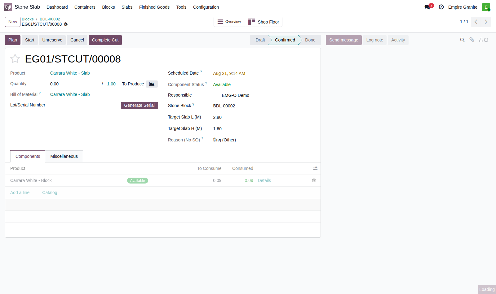

เบิก
ตัด
เก็บ
Empire Granite · เดินระบบจริงครบกระบวนการ
เบิกก้อนหินมาตัด Slab
เก็บสต็อก — ไม่ผูกคำสั่งขาย
จำลองสถานการณ์ที่ฝ่ายคลัง/ผลิตต้องการตัดแผ่นหินสำรองไว้ล่วงหน้าเป็นสต็อกพร้อมขาย โดยยังไม่มีลูกค้าหรือคำสั่งขายผูกอยู่เลย — ใช้กลไกเดียวกับ "ตัดตามสั่ง" (Cut-to-Order) ทุกประการ เพียงเปิดจากหน้าก้อนหินโดยตรงแทนการเปิดจากคำสั่งขาย ตั้งแต่เบิกก้อนหินไปสถานีตัด ตัดจริง จนแผ่นที่ได้เข้าไปอยู่ในคลัง Stone Available พร้อมขายทันที
EMG-O · เดินระบบจริงครบกระบวนการ ไม่ใช่ภาพจำลอง · ทดสอบจริง 21 ส.ค. 2026 บนฐานข้อมูล mbx-ee-dev
ภาพรวมก่อนเริ่ม
ตัดเก็บสต็อกล่วงหน้า คือกลไกเดียวกับโหมด 3 (Cut-to-Order) เพียงไม่มี SO ผูกอยู่
| # | ประเภท | ขายอะไร | ตัดสต็อกตอนไหน | ความละเอียดสต็อก |
|---|
| 1 | หินก้อนนำเข้า | ก้อนหินทั้งก้อน (m³) | ตอนขาย (ไม่ตัด) | ทั้งก้อน ไม่แบ่งขาย |
| 2 | แผ่นหินสำเร็จรูป | แผ่นที่ตัดสำรองไว้แล้ว | ตัดล่วงหน้า เก็บรอขาย | แพง=รายแผ่น(Serial) / ถูก=รวมล็อต(ตร.ม.) |
| 3 | ตัดตามสั่ง (Cut-to-Order) | แผ่นที่ยังไม่มีอยู่จริง | ตัดผ่าน MRP — ผูก SO หรือไม่ก็ได้ | รายแผ่น (Serial) |
| 4 | งานโครงการ (Sold-as-Project) | ชุด BOQ (วัสดุ+ค่าแรงหลายรายการ) | แล้วแต่รายการ | ติดตามระดับโครงการผ่าน Analytic Account |
| 5 | FG Production | สินค้าสำเร็จรูปตัดจาก Slab อีกที | ตัดหลังยืนยัน SO (ผ่าน MRP) | รายชิ้น (Serial) + อาจมีเศษ/byproduct |
เอกสารนี้คือ "กิ่งย่อย" ของโหมด 3 — ใช้ใบสั่งผลิต (MRP) แบบเดียวกันทุกประการ ต่างกันแค่จุดเริ่มต้น: ปกติฝ่ายผลิตเปิด Cut Order จากคิวงานที่มาจากคำสั่งขาย (Factory Worklist) แต่กรณีนี้ฝ่ายผลิตเปิดจากหน้าก้อนหินโดยตรงเพื่อตัดสำรองไว้เป็นสต็อกพร้อมขาย — เหมาะกับการเตรียมสต็อกไว้รับลูกค้า Walk-in หรือหน้าร้าน eCommerce ล่วงหน้า โดยไม่ต้องรอมีคำสั่งขายก่อน
จุดที่ต่างชัดเจน: แผ่นที่ตัดได้จะเป็นสต็อก "Available" ปกติทันที ไม่ถูก Hold ผูกกับใครทั้งสิ้น (ต่างจากโหมด 3 ปกติที่แผ่นจะถูก Hold ผูกกับ SO line ทันทีที่ตัดเสร็จ) — ใครก็ตัดสต็อกนี้ไปขายต่อได้ทันที
แผนผังขั้นตอน
Flow ทั้งหมด — ฝ่ายคลัง/ผลิต 5 ขั้นตอน ไม่มีฝ่ายขาย/ส่งของ/บัญชีเข้ามาเกี่ยวข้อง
กระบวนการทั้งหมดอยู่ในมือฝ่ายคลัง/ผลิตฝ่ายเดียว ตั้งแต่ต้นจนจบ — ไม่ต้องผ่านฝ่ายขาย ไม่มีการส่งของ ไม่มีใบแจ้งหนี้ เพราะยังไม่มีลูกค้าอยู่ในภาพเลย สไลด์ถัดไปจะเดินทีละขั้นตอนตามผังนี้ โดยกล่องที่กำลังอธิบายจะถูกไฮไลท์สีแดงทุกครั้ง
ขั้นตอนที่ 1 / 5 · ฝ่ายคลัง/ผลิต
เลือก Block ที่จะเบิกมาตัด — เปิดจากหน้าก้อนหินโดยตรง ไม่ต้องรอ SO

- ข้อมูลนำเข้า: ก้อนหิน BDL-00002 (Carrara White) มีอยู่แล้วในสต็อก ยังไม่มีคำสั่งขายใดผูกอยู่
- กระบวนการ: ฝ่ายคลัง/ผลิตเปิดหน้าก้อนหินที่ต้องการตัดโดยตรง แท็บ "Slabs" มีปุ่ม "Create Cut Order" ให้กดได้ทันที — ปุ่มเดียวกับที่ใช้เมื่อมี SO แต่เปิดจากคนละจุด

ผลลัพธ์: ก้อน BDL-00002 — Total CBM 20.00 มีปุ่ม "Create Cut Order" อยู่ในแท็บ Slabs พร้อมกดได้ทันที ไม่มีเงื่อนไขเรื่องคำสั่งขาย
ขั้นตอนที่ 2 / 5 · ฝ่ายคลัง/ผลิต
ย้าย Block ไปสถานีตัด (Internal Transfer) ก่อนตัดจริงเสมอ
ใบโอนย้าย EG01/INT/00048 — พร้อมย้าย
ยืนยันย้ายเสร็จสิ้น — Done
เงื่อนไขเดียวกับโหมด 3 ปกติทุกประการ: ก่อนตัดจริงได้ ต้องย้ายก้อนหินจากคลัง "Stone Available" ไปยังคลัง "Stone Production" ก่อนเสมอ ผ่านใบโอนย้ายสินค้าภายใน ระบุ Lot ของก้อนที่จะตัดให้ตรงตัว (BDL-00002-BLK) — จำลองขั้นตอนหน้างานจริงที่ต้องยกก้อนหินไปวางที่แท่นตัดก่อนเริ่มงาน ตัวอย่างจริง: ย้ายปริมาณ 1.00 ลบ.ม. ผ่านเอกสาร EG01/INT/00048
ขั้นตอนที่ 3 / 5 · ฝ่ายคลัง/ผลิต
กด "Create Cut Order" — ระบุขนาดที่ต้องการ + เหตุผลที่ไม่มี SO
เปิดฟอร์มเปล่า — เห็นช่อง "NO SALE ORDER — AUDIT TRAIL"
กรอกขนาด 2.80×1.60 ม. + เลือกเหตุผล "อื่นๆ"
จุดสำคัญของกรณีนี้: เมื่อไม่มี Sale Order ผูกมาด้วย ระบบจะบังคับให้เลือก "Reason (No SO)" เสมอ (ปกติ/งานเพิ่ม/ตัดซ่อม/อื่นๆ) พร้อมช่องผูก Project เพื่อเก็บต้นทุนไว้ได้ถ้าต้องการ — เป็น audit trail ชัดเจนว่าทำไมถึงมีใบสั่งผลิตนี้เกิดขึ้นโดยไม่มีลูกค้า ป้องกันไม่ให้ฝ่ายผลิตตัดหินได้ตามใจโดยไม่มีการบันทึกเหตุผลไว้เลย
ขั้นตอนที่ 4 / 5 · ฝ่ายคลัง/ผลิต
ใบสั่งผลิตยืนยันอัตโนมัติ — ตัดจริง กด "Complete Cut"

- ข้อมูลนำเข้า: ใบสั่งผลิต EG01/STCUT/00008 ถูกสร้างและยืนยันอัตโนมัติทันทีที่กด "Create Cut Order" — ไม่ต้องกดยืนยันซ้ำ
- กระบวนการ: ฝ่ายผลิตตรวจดูว่าวัตถุดิบพร้อม (Component Status: Available) แล้วกดปุ่ม "Complete Cut" เพื่อยืนยันว่าตัดจริงเสร็จแล้ว

ผลลัพธ์: EG01/STCUT/00008 สถานะ Confirmed — แสดง "Reason (No SO): อื่นๆ (Other)" ชัดเจน ไม่มีช่อง Sale Order Line เลย
ขั้นตอนที่ 5 / 5 · ผลลัพธ์
Slab ใหม่เข้าสต็อก Stone Available ทันที — พร้อมขายโดยไม่ผูกใคร
ใบสั่งผลิตเสร็จสิ้น — สร้าง Lot ใหม่
กลับไปดูก้อน BDL-00002 — Available +1
ตรวจสอบจริงผ่าน odoo shell: แผ่นใหม่ Lot "BDL-00002-8" ขนาด 2.80×1.60 ม. (4.48 ตร.ม.) มีสถานะ Available ตรงๆ ไม่ถูก Hold ผูกกับใคร — และก้อนหินส่วนที่เหลือที่ย้ายไปสถานีตัดแต่ไม่ถูกใช้ ถูกระบบคืนกลับเข้าคลัง "Stone Available" ให้อัตโนมัติทันที (คลัง Stone Production เหลือ 0.00 หลังตัดเสร็จ) — ฝ่ายผลิตไม่ต้องย้ายคืนเอง
สรุป
5 ขั้นตอน จากเบิกก้อนหิน ถึง Slab พร้อมขายในสต็อก — ไม่ต้องมีลูกค้าเลย
สิ่งที่ฝ่ายคลัง/ผลิตทำ
เลือกก้อนหินที่จะตัด → ย้ายไปสถานีตัด → เปิด Create Cut Order จากหน้าก้อนหินเอง ระบุขนาด+เหตุผล → ตัดจริงและกด Complete Cut
สิ่งที่ระบบทำให้อัตโนมัติ
บังคับระบุเหตุผลเป็น audit trail เมื่อไม่มี SO → ยืนยันใบสั่งผลิตอัตโนมัติ → สร้างแผ่นพร้อมเลข Serial ให้เอง → คืนก้อนหินส่วนเกินกลับ Stone Available อัตโนมัติ
ผลลัพธ์สุดท้าย
แผ่นหินสถานะ Available เข้าคลัง Stone Available ทันที — พร้อมให้ฝ่ายขายเลือกไปขายต่อผ่านโหมด 2 (แผ่นสำเร็จรูป) ได้เลย โดยไม่ต้องมีคำสั่งขายมาก่อน
เนื้อหาและภาพหน้าจอทั้งหมดจากการเดินระบบจริง ไม่ใช่ภาพจำลอง — ทดสอบจริงเมื่อวันที่ 21 สิงหาคม 2026 บน mbx-ee-dev · ก้อน BDL-00002 → ใบโอนย้าย EG01/INT/00048 → ใบสั่งผลิต EG01/STCUT/00008 → แผ่นใหม่ Lot BDL-00002-8 (Available)